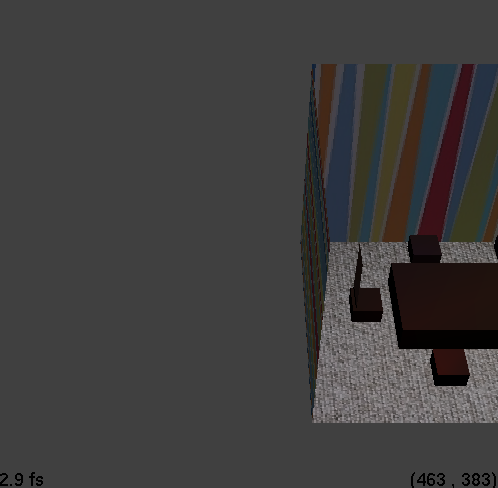
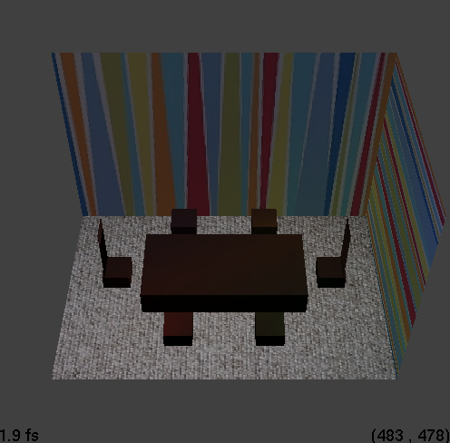
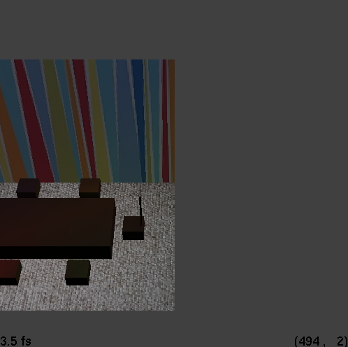

David Koh
dkoh7
Computer Graphics 600.357
Compiled using gcc with Oracle VM VirtualBox, using Ubuntu
Late Days Used: 0
The following assignment portions were implemented:
- All functions complete
- RayCamera (translate, not rotate)
The following room scene portions were implemented:
- Walls, floor, and ceiling
- Variety of surfaces
- Multiple textures
- Three light sources
*Help was received from the TA's during their hours. Thanks!
Below are some sample results (images have been cropped/scaled):
Sphere
cl: ./Assignment3 --in sphere.ray --width 400 --height 400 --cplx 100
Sphere (with texture)
cl: ./Assignment3 --in sphere_texture.ray --width 400 --height 400 --cplx 100
Transformation and Lighting
Using the given test.ray file
cl: ./Assignment3 --in test.ray --width 400 --height 400 --cplx 100
Box (with "wood" texture)
cl: ./Assignment3 --in box.ray --width 400 --height 400 --cplx 100
Cylinder
cl: ./Assignment3 --in cylinder.ray --width 400 --height 400 --cplx 100
Room Scene
Lights (r,b,g,y) are on the mini-chairs.
cl: ./Assignment3 --in roomscene.ray --width 500 --height 500 --cplx 100
|  |
 |
 |
Left Side |
Center |
Right Side |
Art Competition:
With some adjustments to the lighting, I present to you the sunset room:
Art Competition:
My roomscene.ray (as shown above) will be my Ray Contest entry.